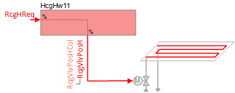
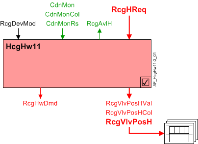
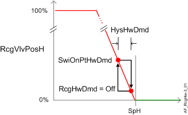
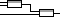

Ceiling heating with hot water (HcgHw11)
 | This application function operates hot water valve(s) for radiant ceiling device(s) such as ceiling panel(s). The valve position is calculated based a request signal (from the room controller) received for heating. Multiple panel control is supported. |
Required elements and how to configure them:
Element | I/O | Signal type |
|---|---|---|
RcgVlvPosH "Radiant ceiling valve position for heating" | On-board output, Radiant ceiling valve position 1 | Heating |
Function
The figure below shows BACnet objects associated with this application function. Primary signal flow is summarized as follows:
Radiant ceiling heating request (RcgHReq) is received and processed into the output signal for radiant ceiling valve position (RcgVlvPosH).
Basic function: Accept request signal from associated room controller and pass it through a device mode logic switch; Output the result as a command to the BACnet object that controls the device.

Command or request (or related) | |
Notification of condition or status, or availability | |
Device mode |
Hot water valve modulation: In response to heating demand, the heating valve is modulated to control the room temperature at setpoint. In response to external triggers for special modes such as warm-up, cool down, or safety conditions, the heating valve may be set to off or fully open.
Note
This AF does not perform loop control; its main purpose is to run commands. Loop control processes (for this AF) are managed in the "room" AF(s) that collaborate with this AF to command the end device.
Multiple panel control: The radiant ceiling valve position heating collection object (RcgVlvPosHCol) can reference and control multiple ceiling valve actuators.
Radiant ceiling valve position heating objects (RcgVlvPosH) are referenced by the radiant ceiling valve position heating collection object (RcgVlvPosHCol); this collection object is a common node for any / all RcgVlvPosH object(s). The value for RcgVlvPosH comes from RcgVlvPosHVal.
Device mode: The input signal for device mode is a multistate value.
RcgDevMod supports the following states:
- Off
- Control mode (modulation)
- Fully open
Heating available status: When the ceiling panel(s) are available for heating, the binary output signal for "Radiant ceiling available for heating" (RcgAvlH) will be "Yes" (available). RcgAvlH is used by the system to regulate heating resources. For example, if there is a call for heating but the ceiling panel(s) are not available because they are already at maximum capacity (because device mode is fully open), then RcgAvlH will signal "No" and the next available heating resource in the temperature control sequence will be activated.
For heating available status to be "Yes", device mode must equal "Control mode" (modulation).
Supply chain interface, HwDmd: The output signal for hot water demand is a multistate value.
RcgHwDmd supports the following states:
- Off (no demand signal)
- Heating demand (demand signal is active)
- Warm-up (Hot water demand is initiated when plant operating mode is set to warm-up)
The following figure(s) illustrates control modulation and related functions.

HysHwDmd | Hysteresis for hot water demand |
RcgHwDmd | Radiant ceiling hot water demand |
RcgVlvPosH | Radiant ceiling valve position for heating |
SpH | Setpoint for heating |
SwiOnPtHwDmd | Switch-on point for hot water demand |
Configuration

ParametersDescription | Parameter | Default value |
|---|---|---|
Hot water demand | ||
Switch-on point for hot water demand | SwiOnPtHwDmd | 4 [%] |
Hysteresis for hot water demand | HysHwDmd | 2 [%] |
Interface
Interface | Description | Type | Ref. | Owned by | |
|---|---|---|---|---|---|
RcgVlvPosHCol | Collection of radiant ceiling valve position for heating | ColView | ● | - | |
| RcgVlvPosH | Radiant ceiling valve position for heating (1...n) | AO | ◉ | Room segment / Device |
RcgVlvPosHVal | Radiant ceiling valve position value for heating | APrcVal | ● | - | |
RcgDevMod | Radiant ceiling device mode 1:Off | MPrcVal | ● | - | |
RcgHReq | Radiant ceiling heating request | ACalcVal | ● | - | |
RcgAvlH | Radiant ceiling available for heating 0:No | BCalcVal | ● | - | |
RcgHwDmd | Radiant ceiling hot water demand 1:Off | MCalcVal | ● | - | |
RcgSplyHw | Radiant ceiling supply chain for hot water | GrpMbr | ● | Room segment | |
Engineering and commissioning
Verify operation for single output and multiple output.
Consider controlling the space as separate segments, rather than multiple objects in one segment. This allows the panels to operate individually.